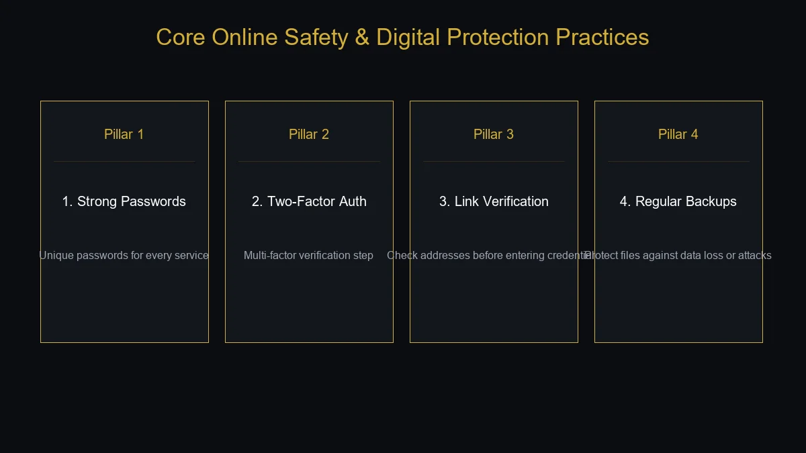
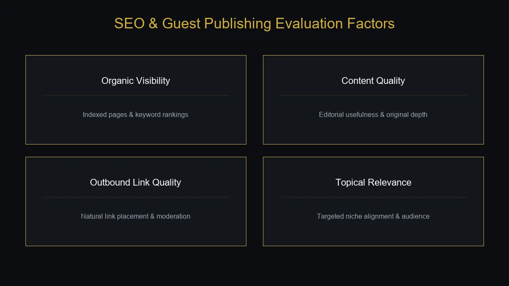

If you have searched for thealitekeepsafe com, you may be trying to understand what the website is, what the unusual name means, and whether it is connected to online safety, cybersecurity, or digital protection.
The name itself strongly suggests a safety-focused concept. However, the information associated with Thealitekeepsafe.com is broader than cybersecurity alone. The domain appears across online publishing and guest-posting platforms, with its wider content footprint connected to technology, business, health, education, lifestyle, travel, food, finance, AI, SEO, and other general-interest subjects.
That makes it important to separate the meaning suggested by the domain name from the actual role of the website.
This guide explains what Thealitekeepsafe.com is, what topics are associated with it, what “Thealite Keep Safe” can mean, how to evaluate the website, and what users and SEO professionals should know before relying on information about the domain.
What Is Thealitekeepsafe Com?
Thealitekeepsafe.com is an English-language informational website with a broad publishing footprint and strong associations with safety, technology, security, and general-interest content.
The domain is not limited to one narrow category.
Its wider online presence is associated with topics such as:
- Technology
- Online safety
- Digital security
- Business
- Finance
- Artificial intelligence
- Health
- Education
- Lifestyle
- Travel
- Food
- SEO
- Entertainment
- Sports
This broad subject range means that describing Thealitekeepsafe.com only as a cybersecurity website would be too narrow.
A more useful description is a general informational publication with safety, security, technology, and digital-awareness associations.
What Does “Thealite Keep Safe” Mean?
One of the first things people notice is the unusual name.
Thealite Keep Safe can naturally create associations with:
- Personal safety
- Digital security
- Privacy
- Account protection
- Data protection
- Safe browsing
- Responsible technology use
Some online discussions interpret the name as resembling the phrase “the elite keep safe.”
However, that should be treated as an interpretation of the domain name rather than an officially established definition.
A domain name does not always provide a complete description of what a website does.
The more useful approach is to examine the website's content and broader digital presence.
Why Is Thealitekeepsafe Com Getting Attention?
There are several reasons the domain has attracted attention online.
First, the name naturally creates curiosity.
Second, the domain appears across third-party publishing and SEO platforms.
Third, content associated with the name covers considerably more than basic safety topics.
This combination makes the domain interesting to several groups:
- General readers
- Technology enthusiasts
- Digital marketers
- SEO professionals
- Content creators
- Businesses
- Bloggers
The domain therefore has both an informational and digital-publishing context.
Thealitekeepsafe Com and Online Safety
Online safety is one of the most natural topics associated with the name.
People now use the internet for almost everything:
- Banking
- Shopping
- Education
- Communication
- Entertainment
- Work
- Healthcare
- Business
- Cloud storage
That creates a growing need for basic digital-security awareness.

Important online-safety practices include:
Use Strong, Unique Passwords
Avoid using the same password across multiple services.
If one account becomes compromised, reused credentials can expose other accounts.
Enable Two-Factor Authentication
Two-factor authentication adds another verification step beyond a password.
It can significantly improve account security when supported by a service.
Be Careful With Links
Phishing messages often attempt to make users click deceptive links.
Before entering credentials, check the website address carefully.
Keep Software Updated
Operating-system and application updates can include important security fixes.
Protect Personal Information
Avoid sharing sensitive information unnecessarily.
Back Up Important Files
Backups can help reduce the damage caused by device failure, accidental deletion, or certain cyberattacks.
These principles are useful regardless of which website or service a person uses.
Thealitekeepsafe Com and Digital Privacy
Online safety and privacy are closely connected.
Everyday digital activity can involve sharing:
- Names
- Email addresses
- Phone numbers
- Locations
- Payment information
- Account credentials
- Browsing information
Users should therefore understand what information a website or application requests and why it needs that information.
Before submitting personal details, consider:
- What information is being requested?
- Why is it necessary?
- Who will receive it?
- How long might it be retained?
- Is there a privacy policy?
- Can the information be deleted later?
Good privacy habits are especially important when dealing with financial services, healthcare platforms, business systems, and social accounts.
Is Thealitekeepsafe Com a Cybersecurity Website?
Not exclusively.
The name has clear safety and security associations, and online content connected with Thealite Keep Safe discusses digital protection and responsible online behavior.
However, the domain also has a broader general-content footprint.
It is therefore more accurate to describe it as a general informational website with safety, security, technology, and digital-awareness themes rather than a dedicated enterprise cybersecurity company.
This distinction matters because a cybersecurity company would normally provide specialized security products, professional services, threat intelligence, or technical security documentation.
A general information website serves a different purpose.
What Topics Are Associated With Thealitekeepsafe Com?
The broader online footprint of the domain covers many categories.
Technology
Technology content can include:
- Software
- Digital tools
- AI
- Online services
- Cybersecurity
- Emerging technology
Business
Business-related subjects can include:
- Entrepreneurship
- Marketing
- Business growth
- Digital operations
- Productivity
Finance
Financial topics can include:
- Money management
- Financial services
- Business finance
- General financial education
Important financial decisions should always be supported by current information from reliable financial institutions or qualified professionals.
Health
Health and wellness content can include:
- Healthy living
- Fitness
- Nutrition
- Lifestyle
- General wellness
General online information should not replace professional medical advice.
Education
Educational subjects can include:
- Learning
- Careers
- Study techniques
- Professional development
- Educational technology
Lifestyle
Lifestyle content can cover everyday interests, personal development, travel, food, and other general topics.
SEO and Digital Marketing
SEO-related content can address:
- Search optimization
- Content marketing
- Link building
- Online visibility
- Digital strategy
The broad range of subjects is one of the defining characteristics of the domain's online presence.
Is Thealitekeepsafe Com Legit?
This question requires a little context.
A website being active does not automatically mean every claim associated with it is independently verified.
The domain has a visible online footprint and appears in third-party publishing and SEO marketplaces. That establishes that it exists as an online domain with publishing activity.
However, “legitimate” can mean different things.
It could mean:
- Does the domain exist?
- Is the website accessible?
- Does it publish content?
- Is it a recognized company?
- Are its articles accurate?
- Are its services trustworthy?
These questions require different evidence.
The safest conclusion is that Thealitekeepsafe.com has an established online presence, but specific claims, services, offers, and articles should still be evaluated independently.
Is Thealitekeepsafe Com Safe to Visit?
Website safety and website credibility are not exactly the same thing.
A website can use HTTPS and still publish inaccurate information.
Similarly, a domain can be unfamiliar without being malicious.
When visiting Thealitekeepsafe.com or another unfamiliar website, use normal safety precautions.
Verify the Domain
Make sure the address is spelled correctly.
Check HTTPS
A secure connection is useful for protecting data transmitted between your browser and the website.
Avoid Unexpected Downloads
Do not install unfamiliar software or open suspicious files simply because a webpage tells you to.
Protect Passwords
Never reuse sensitive passwords across unrelated websites.
Be Careful With Payments
Before paying for a service, understand the price, refund policy, billing terms, and what you are actually purchasing.
Limit Personal Information
Only provide information that is genuinely necessary.
Why HTTPS Does Not Prove a Website Is Trustworthy
Many users assume that a padlock icon means a website is completely safe.
That is not what HTTPS means.
HTTPS primarily protects the connection between your browser and the website.
It does not automatically establish:
- The accuracy of published content
- The honesty of the website owner
- The quality of a service
- The reliability of a business
- The legitimacy of every external link
Therefore, HTTPS should be treated as one security signal rather than a complete trust verdict.
Thealitekeepsafe Com for Content Creators
The safety concept is especially relevant to bloggers, freelancers, publishers, and digital creators.
Content creators often manage valuable digital assets such as:
- Websites
- Articles
- Images
- Videos
- Social accounts
- Client files
- Email accounts
- Advertising accounts
- Payment accounts
Losing access to one of these systems can cause significant problems.
A sensible protection strategy includes:
- Unique passwords
- Two-factor authentication
- Regular backups
- Account recovery information
- Updated software
- Secure devices
- Careful handling of links
- Monitoring unusual account activity
The goal is not complicated cybersecurity.
It is consistent digital hygiene.
Thealitekeepsafe Com for Businesses
Businesses face even greater digital-security challenges because one compromised account can affect multiple people.
A company may need to protect:
- Customer information
- Employee accounts
- Financial records
- Business email
- Internal documents
- Websites
- Cloud services
- Payment systems
Basic security policies can include:
- Multi-factor authentication
- Role-based access
- Regular backups
- Security training
- Software updates
- Password management
- Access reviews
- Incident-response planning
Even small businesses benefit from having basic security procedures rather than relying entirely on individual employees to make good decisions.
Thealite Keep Safe and Responsible Online Behavior
Online security is not only about technology.
Human behavior is also a major part of security.
For example, a highly secure password system can still fail if a user gives their password to a fake support agent.
Similarly, an updated computer can still become compromised if someone downloads an unknown attachment.
Responsible digital behavior means:
- Questioning unexpected requests
- Checking links
- Verifying identities
- Avoiding unnecessary downloads
- Protecting credentials
- Reporting suspicious activity
Technology can reduce risk, but users still play an important role.
Thealitekeepsafe Com and SEO
The domain also appears in the SEO and guest-posting ecosystem.
Third-party SEO marketplaces currently list Thealitekeepsafe.com as a site where publishers can purchase or arrange guest-post placements.
These listings report different metrics for the domain.
For example, one marketplace currently reports a Domain Authority of 39, while another reports DA 38, with substantially different Domain Rating and traffic estimates.
This variation is normal.
Why SEO Metrics Differ
SEO platforms do not all use the same databases or measurement systems.
Different providers may calculate:
- Domain Authority
- Domain Rating
- Traffic estimates
- Backlink counts
- Referring domains
- Spam indicators
using different methods.
Therefore, a reported number should be treated as an estimate from that particular provider, not as an official measurement supplied by Google.
For a serious SEO evaluation, look beyond one metric.
Important factors include:
- Referring-domain quality
- Backlink relevance
- Organic visibility
- Indexed pages
- Content quality
- Traffic quality
- Topical relevance
- Link placement
- Editorial standards

Thealitekeepsafe Com Guest Posting
The domain is visible on guest-posting marketplaces that advertise content-placement opportunities.
One marketplace lists the website under the General category and allows up to two dofollow links in an article under its stated publishing rules.
Another marketplace lists guest-post opportunities with permanent links and reports a maximum of two dofollow links.
These listings show that guest posting is part of the domain's current digital footprint.
However, marketers should not evaluate a guest-post opportunity solely by the number beside DA.
A useful SEO assessment should ask:
- Is the website relevant to my topic?
- Does it have real organic visibility?
- Are its pages indexed?
- Does the content look editorially useful?
- Are outbound links excessive?
- Is the audience relevant?
- Is the link placed naturally?
- Does the publication provide meaningful exposure?
A relevant placement is usually more valuable than an unrelated backlink obtained simply because a metric looks attractive.
Should You Buy a Guest Post on Thealitekeepsafe Com?
There is no universal answer.
It depends on your objective.
If your goal is simply to obtain a backlink, you should compare the opportunity against other relevant publications.
If your goal is brand exposure, audience reach, and topical relevance, examine the actual content and readership rather than focusing only on SEO metrics.
Before purchasing a placement, check:
- Recent published articles
- Organic search visibility
- Content quality
- Number and quality of outbound links
- Relevance to your niche
- Link attributes
- Publication rules
- Pricing
- Whether the article is likely to remain available
A backlink is not a guaranteed ranking boost.
Google rankings depend on many factors beyond a single external link.
Thealitekeepsafe Com and Semantic SEO
For the keyword Thealitekeepsafe com, semantic SEO is especially important because the domain name itself does not clearly communicate the full topic.
Relevant entities and concepts include:
- Thealite Keep Safe
- Online safety
- Digital security
- Privacy
- Cybersecurity
- Data protection
- Account security
- Safe browsing
- Technology
- Digital publishing
- Content creators
- SEO
- Guest posting
- Business
- Artificial intelligence
These relationships help establish the broader context surrounding the entity.
A natural semantic structure might look like:
Thealitekeepsafe → digital safety → privacy → account protection → cybersecurity → technology → content protection → online publishing
This is more useful than repeating the exact keyword in every paragraph.
Entity Profile: Thealitekeepsafe Com
For a branded search, the entity can be summarized as follows:
Entity: Thealite Keep Safe
Domain: Thealitekeepsafe.com
Type: General informational and digital publishing website
Primary associations: Online safety, digital security, technology, privacy, and general-interest content
Additional topics: Business, finance, health, education, lifestyle, travel, food, AI, SEO, entertainment, and sports
Audience: General readers, businesses, content creators, marketers, bloggers, and technology users
The exact category mix can change as the website publishes new material.
Thealitekeepsafe Com and Digital Content
Digital publishing has changed how people discover information.
Today, users can find content through:
- Search engines
- Blogs
- Digital magazines
- Social networks
- Publishing platforms
- Guest-post websites
- Online communities
This creates opportunities for publishers but also creates a challenge.
Not every published article has the same editorial quality.
Readers therefore need to consider:
- Who wrote the article?
- Is the information current?
- Are claims supported?
- Is the content promotional?
- Can the information be independently verified?
The same standards should apply when evaluating content associated with Thealitekeepsafe.com.
How to Evaluate an Article on Thealitekeepsafe Com
A simple evaluation process can help.
- Check the Author: Look for a clear author identity and relevant expertise.
- Check the Date: Some subjects become outdated quickly.
- Examine the Sources: Strong claims should ideally have supporting evidence.
- Identify the Purpose: Determine whether the article is educational, commercial, promotional, or opinion-based.
- Verify Important Information: Use official or primary sources for high-impact claims.
- Compare Other Sources: If several reliable sources independently support the same information, confidence increases.
Common Mistakes When Researching Thealitekeepsafe Com
Mistake 1: Assuming the Name Is an Official Security Brand
The name sounds security-oriented, but a domain name alone does not establish what type of company operates it.
Mistake 2: Calling It Only a Cybersecurity Website
The broader online footprint includes many general-interest categories.
Mistake 3: Treating SEO Metrics as Proof of Quality
DA, DR, traffic estimates, and similar metrics are useful indicators, not guarantees.
Mistake 4: Assuming a Backlink Guarantees Rankings
No single backlink guarantees a Google ranking improvement.
Mistake 5: Trusting One Third-Party Review
Different websites can report different information.
Mistake 6: Ignoring Current Information
A website's content, policies, metrics, and publishing practices can change.
Thealitekeepsafe Com vs. a Dedicated Cybersecurity Company
It is useful to understand the difference.
| Feature | Thealitekeepsafe.com | Dedicated Cybersecurity Company |
|---|---|---|
| General articles | Yes | Sometimes |
| Safety-related content | Associated | Core focus |
| Security products | Not clearly established | Usually |
| Security consulting | Not clearly established | Often |
| Threat intelligence | Not necessarily | May provide |
| General lifestyle content | Possible | Usually not |
| Guest publishing | Associated with domain | Depends on company |
The key point is that a general informational website should not automatically be treated as a professional cybersecurity provider.
Who May Find Thealitekeepsafe Com Useful?
General Internet Users
People looking for basic information about digital safety may find safety-related content useful.
Content Creators
Bloggers and publishers can apply basic account-security and data-protection principles.
Businesses
Small businesses can use general security concepts as a starting point for improving digital hygiene.
Digital Marketers
SEO professionals may be interested in the domain's publishing and guest-posting footprint.
Technology Readers
People interested in technology, AI, privacy, and digital trends may encounter related content.
What Are the Main Benefits of Thealitekeepsafe Com?
Broad Topic Coverage
The domain's content footprint extends beyond one narrow subject.
Safety-Oriented Branding
The name immediately communicates an association with protection and security.
Digital Publishing Presence
The domain appears across online publishing and SEO marketplaces.
Multiple Audience Types
Its broad content range can appeal to readers, businesses, creators, and marketers.
Practical Digital-Safety Themes
Concepts such as password security, privacy, account protection, and safe browsing are relevant to everyday internet users.
What Are the Limitations?
Broad Rather Than Highly Specialized
A general publication may not offer the depth of a specialist cybersecurity resource.
Third-Party Metrics Vary
SEO providers report noticeably different authority and traffic estimates.
Online Claims Require Verification
A domain's existence does not automatically verify every claim made about it.
Content Quality May Vary by Topic
Different subjects require different levels of expertise.
Guest-Post Metrics Need Context
A DA number alone does not determine the value of a publication.
How to Use Thealitekeepsafe Com Effectively
If you encounter the website while researching online, follow a practical approach.
Start With the Article's Purpose
Understand why the article was written.
Check Whether the Information Is Current
Technology and online services can change quickly.
Verify High-Stakes Claims
Use official sources for financial, medical, legal, and security decisions.
Protect Your Information
Do not provide unnecessary personal details.
Evaluate Links Carefully
Before following external links, check where they lead.
Treat SEO Listings Separately From Editorial Quality
A site's SEO metrics and the usefulness of its articles are two different things.
Frequently Asked Questions About Thealitekeepsafe Com
What is Thealitekeepsafe com?
Thealitekeepsafe.com is a general informational and digital publishing website associated with online safety, security, technology, privacy, and a broad range of other topics.
What does Thealite Keep Safe mean?
The name naturally suggests safety and protection. Some online discussions interpret it as resembling “the elite keep safe,” but that is an interpretation rather than a confirmed official definition.
Is Thealitekeepsafe com a cybersecurity website?
Not exclusively. It has safety and security associations but also has a broader informational content footprint covering technology, business, lifestyle, education, finance, travel, and other subjects.
Is Thealitekeepsafe com legitimate?
The domain has an identifiable online presence and appears across publishing and SEO platforms. However, individual services, claims, and articles should be independently evaluated.
Is Thealitekeepsafe com safe?
Use normal online-safety precautions. Verify the domain, avoid unexpected downloads, protect passwords, limit personal information, and be cautious with payments.
Does Thealitekeepsafe com offer guest posts?
Third-party publishing marketplaces currently list guest-post opportunities associated with the domain. Exact requirements, prices, and publishing policies should be confirmed before purchasing a placement.
Can Thealitekeepsafe com help with SEO?
It may be relevant to guest posting and digital publishing, but a placement on one website does not guarantee higher Google rankings.
What topics are associated with Thealitekeepsafe com?
Associated topics include safety, security, technology, AI, business, finance, health, education, lifestyle, travel, food, SEO, entertainment, and sports.
Does Thealitekeepsafe com have strong domain authority?
Third-party SEO platforms currently report different figures, including DA values in the high 30s. Because different providers use different data and methodologies, these numbers should be treated as estimates rather than official Google metrics.
Who is Thealitekeepsafe com for?
The website can be relevant to general readers, technology users, content creators, businesses, bloggers, digital marketers, and people interested in online safety.
Should I rely on Thealitekeepsafe com for cybersecurity advice?
For basic digital-safety information, general articles can be useful as a starting point. For serious security incidents or professional cybersecurity decisions, use authoritative security guidance and qualified professionals.
Final Thoughts
Thealitekeepsafe com is best understood as a broad informational and digital publishing website with strong associations with online safety, security, technology, privacy, and responsible digital behavior.
Its broader content footprint extends into business, finance, AI, health, education, lifestyle, travel, food, SEO, entertainment, and other general-interest subjects.
The unusual name naturally makes people wonder whether the domain represents a dedicated cybersecurity company. Based on the broader information available, that would be too narrow a description.
A better way to understand Thealitekeepsafe.com is as a general digital publication whose branding strongly evokes safety and protection.
For everyday readers, the most useful takeaway is that online safety does not depend on one website or one security tool. Strong passwords, multi-factor authentication, software updates, careful link handling, backups, and privacy awareness are useful regardless of where you browse.
For SEO professionals and publishers, the domain also has a visible guest-posting footprint. However, third-party metrics such as DA, DR, traffic, and backlink counts should be treated as estimates and evaluated alongside relevance, content quality, organic visibility, and editorial standards.
Ultimately, whether you are researching Thealitekeepsafe com because of its safety-related content, its technology articles, or its presence in the guest-posting ecosystem, the best approach is the same: verify important claims, check current information, evaluate the specific page you are reading, and avoid treating a single metric or third-party description as the complete picture.
For more such useful information read our site ateliergolddruck.com